My final project
Research Question: How does gender for incarcerated individuals influence their levels of support for controversial policy proposals, specifically: an assault weapons ban, marijuana legalization, raising the minimum wage, and tightening border security?
Hypothesis: Women are hypothesized to show significantly higher levels of support for marijuana legalization, raising the minimum wage, and an assault weapons ban compared to men. Specifically, we predict that women will be less likely to strongly oppose these measures and more likely to strongly support them. Additionally, for the topic of tightening border security, men are hypothesized to show higher levels of support compared to women, who are expected to display lower levels of strong support and higher levels of strong opposition.
This topic is interesting because while political differences between men and women are well-documented, this data set measures opinions for individuals for whom typical gender indicators do not completely apply. That is, there are gender differentials in society which reflect on political opinions, such as different concentrations of men and women in varying occupations, different levels of closeness to family, and different levels of exposure to crime, guns, and security based on gendered positions within society. However, this data presupposes that these individuals are removed from society by nature of their incarceration and have had some above-average level of exposure to crime. Thus, while gender differentials in society may have applied pre-incarceration, they may apply less strongly to individuals when they are incarcerated.
It is also important because there are many stereotypes when it comes to incarcerated individuals; namely, that they would have more support for policies which de-criminalize any activity (including marijuana, the use of assault weapons, or illegal immigration). Stereotyping may be even more true for incarcerated women, who are stigmatized more strongly due to patriarchal expectations for women to be pacifists, rule-followers, and non-criminals. In other words, women are criminalized less frequently then men, so the political opinions of incarcerated women are severely under-represented in any kind of media or political analysis. This data is representative of their true political opinions, which would hopefully overcome stereotypes.
Alternatively, one factor that is important to consider is that prison facilities segregate by gender; that is, women interact with women and men only interact with men. This is not true (for the most part) in normal society. This may affect individuals’ responses.
Here are visualizations of range of support for incarcerated individuals on tightening border security, legalizing marijuana, raising the minimum wage, and banning assault weapons.
While these do not tell us anything about the relationship between the independent and dependent variables posed in the hypothesis, they are very interesting for contextual background on the general opinions of incarcerated individuals on controversial policy topics. Besides an assault weapons ban, which seems to be the most controversial by the somewhat even distribution of the spread of responses, raising minimum wage, legalizing marijuana, and tightening border security all have strong support. This is surprising in that these three categories are spread among political lines; raising minimum wage and legalizing marijuana are Democrat proposals, while tightening border security is more Republican, reflecting a degree of bipartisanship among respondents right off the bat. This is notable context, however I do not integrate this into my final data conclusions.
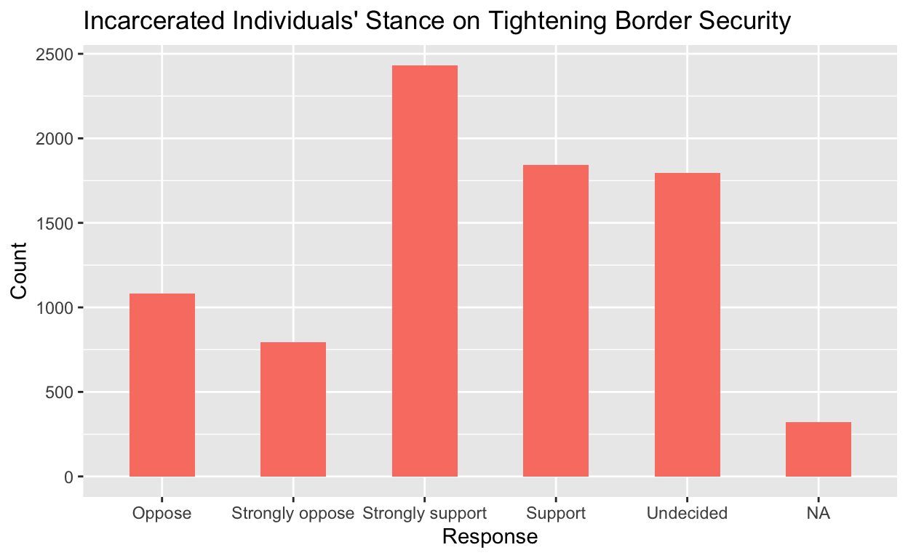
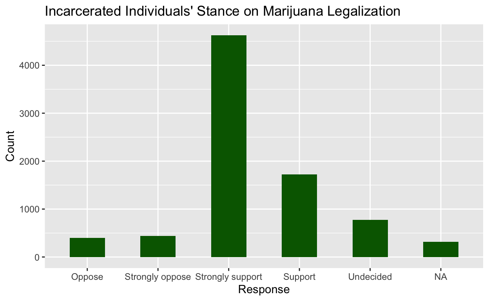
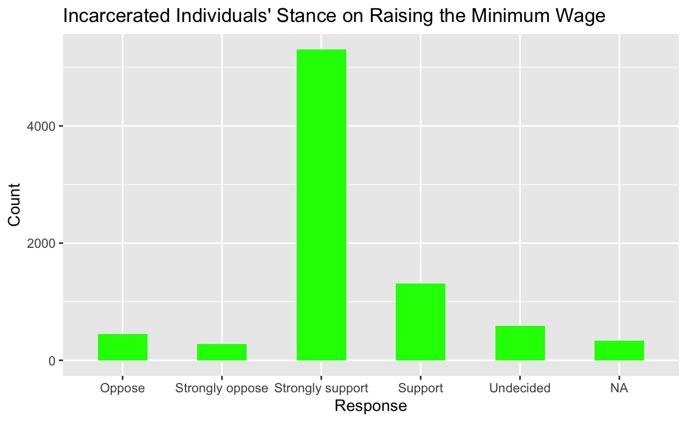
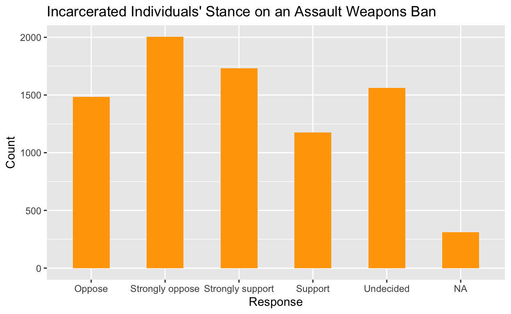
How does gender affect respondents stances on assault weapons bans, marijuana legalization, tightening border security, and raising minimum wage?
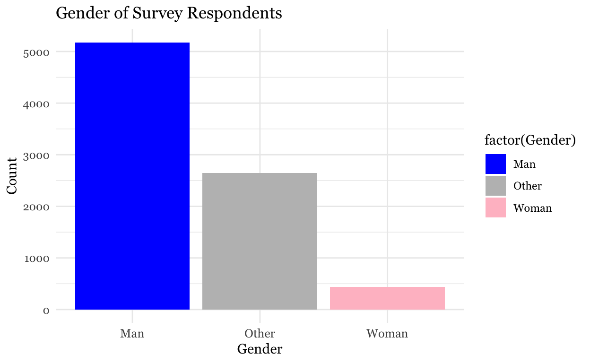
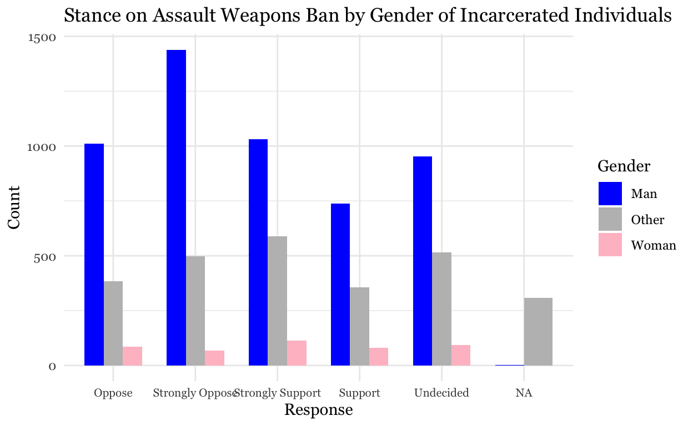
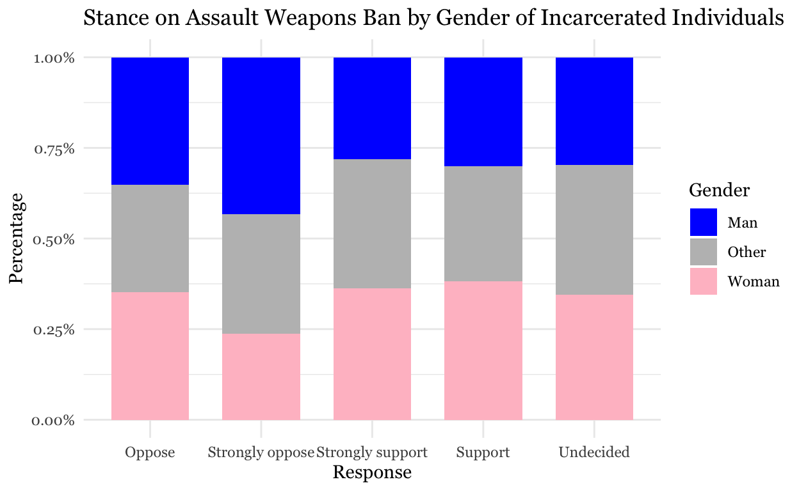
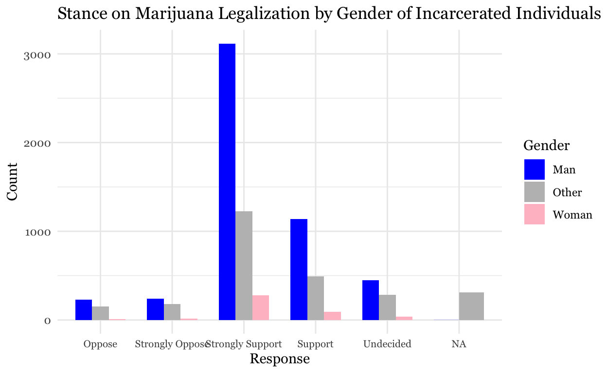
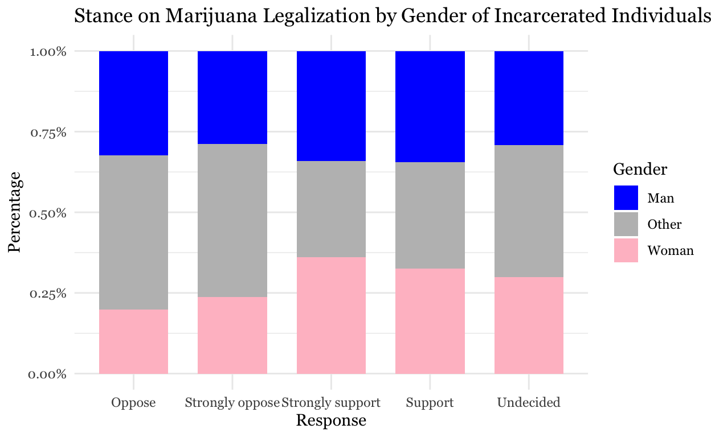
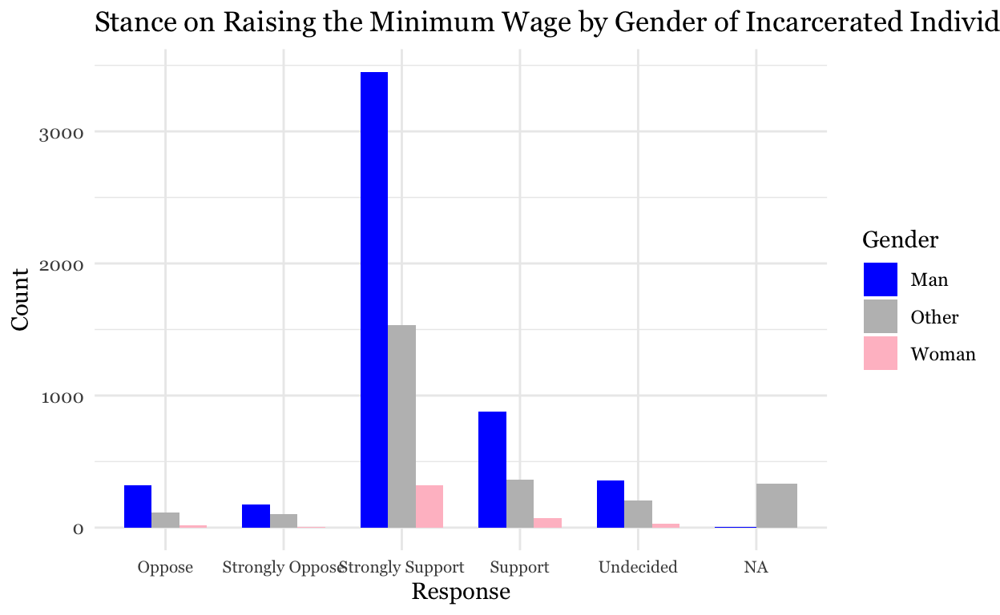
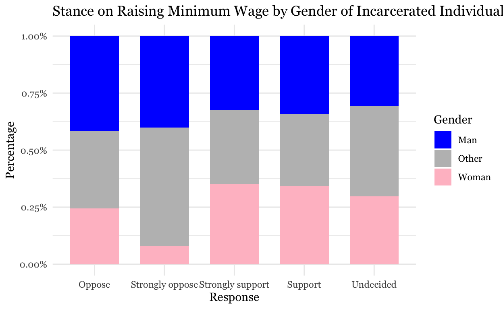
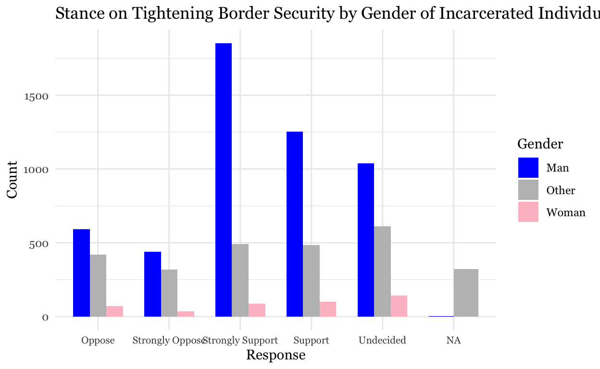
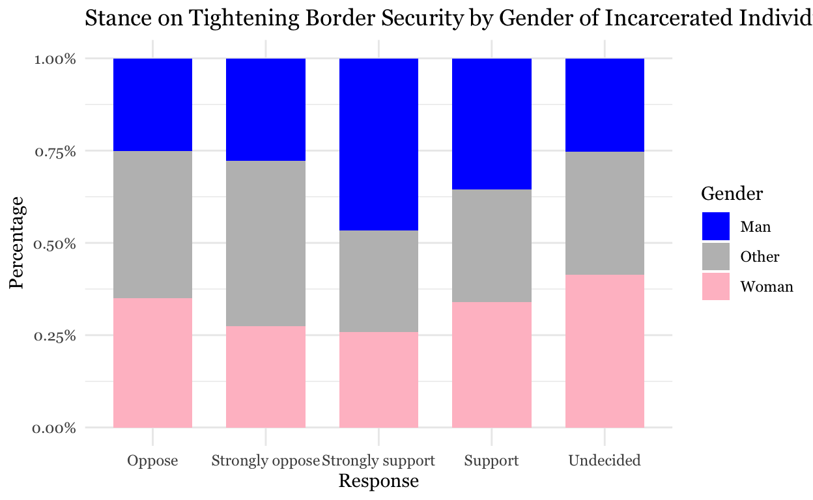
These graphs provide visual representations for the stances on all 4 proposed policy actions, organized by the gender of the respondents. For each policy action, I’ve included two graphs: one that shows the survey responses of men, women, and “other” by count, and one that shows what percentage of each gender category answered in what way to each policy proposal.
The data source is from the Marshall Project, which carries out a survey through collaboration with tablet companies in some facilities, as well as in paper form through the Marshall Project’s print publication. Paper questionnaires are mailed in by respondents. Responses were collected on a rolling basis over several months, and this data includes over 8,000 survey responses collected by March of 2020. The independent variable I’ve taken into account is gender. The survey asked when a respondent identified as a man (TRUE or FALSE) or identified as a woman (TRUE or FALSE). If a respondent wrote false for both, or true for both, or declined to answer, they were put into the category of “other.” The dependent variable(s) I’ve chosen are about an individual’s stance on four controversial political topics. The questions were posed as “Please indicate how you feel about the following policy: tightening border security,” with answers available from strongly oppose, oppose, undecided, support, and strongly support.
These graphs indicate that there are significantly fewer women represented in the data. The percentage graphs show the percentage of female, male, or “other” respondents on a given question who fall into each category. I included these to grant a more representative view of attitudes within each gender category, in a way that befits my attempt to identify a causal analysis between gender and political opinions. However, the graphs which measure “count” on the y-axis are also interesting, as they grant a very clear representation of how many men, women, and “other” responded in a given way to each question posed. In this way, those graphs are very representative of the actual data set.
Call:
lm(formula = Border_Security_Numeric ~ Gender, data = incarceration)
Residuals:
Min 1Q Median 3Q Max
-1.22928 -0.22928 -0.04348 0.77072 0.95652
Coefficients:
Estimate Std. Error t value Pr(>|t|)
(Intercept) 3.22928 0.01426 226.38 < 2e-16 ***
GenderOther -0.18580 0.02429 -7.65 2.43e-14 ***
GenderWoman -0.12801 0.04539 -2.82 0.00482 **
---
Signif. codes: 0 '***' 0.001 '**' 0.01 '*' 0.05 '.' 0.1 ' ' 1
Residual standard error: 0.7659 on 4714 degrees of freedom
(3549 observations deleted due to missingness)
Multiple R-squared: 0.01269, Adjusted R-squared: 0.01227
F-statistic: 30.29 on 2 and 4714 DF, p-value: 8.531e-14
Call:
lm(formula = Marijuana_Legalization_Numeric ~ Gender, data = incarceration)
Residuals:
Min 1Q Median 3Q Max
-1.5563 -0.4992 0.5008 0.5008 0.6369
Coefficients:
Estimate Std. Error t value Pr(>|t|)
(Intercept) 3.49918 0.01689 207.12 <2e-16 ***
GenderOther -0.13603 0.02907 -4.68 3e-06 ***
GenderWoman 0.05716 0.06278 0.91 0.363
---
Signif. codes: 0 '***' 0.001 '**' 0.01 '*' 0.05 '.' 0.1 ' ' 1
Residual standard error: 0.7206 on 2886 degrees of freedom
(5377 observations deleted due to missingness)
Multiple R-squared: 0.008474, Adjusted R-squared: 0.007787
F-statistic: 12.33 on 2 and 2886 DF, p-value: 4.643e-06
Call:
lm(formula = Raise_Min_Wage_Numeric ~ Gender, data = incarceration)
Residuals:
Min 1Q Median 3Q Max
-1.4874 -0.3609 0.6391 0.6391 0.6422
Coefficients:
Estimate Std. Error t value Pr(>|t|)
(Intercept) 3.360878 0.019941 168.537 <2e-16 ***
GenderOther -0.003107 0.036067 -0.086 0.9314
GenderWoman 0.126517 0.074659 1.695 0.0903 .
---
Signif. codes: 0 '***' 0.001 '**' 0.01 '*' 0.05 '.' 0.1 ' ' 1
Residual standard error: 0.7848 on 2347 degrees of freedom
(5916 observations deleted due to missingness)
Multiple R-squared: 0.001271, Adjusted R-squared: 0.0004201
F-statistic: 1.494 on 2 and 2347 DF, p-value: 0.2248
Call:
lm(formula = Assault_Weapons_Ban_Numeric ~ Gender, data = incarceration)
Residuals:
Min 1Q Median 3Q Max
-0.9769 -0.8990 0.1010 1.0231 1.1010
Coefficients:
Estimate Std. Error t value Pr(>|t|)
(Intercept) 2.89904 0.01518 190.953 < 2e-16 ***
GenderOther 0.07785 0.02696 2.887 0.00391 **
GenderWoman 0.07788 0.05126 1.519 0.12874
---
Signif. codes: 0 '***' 0.001 '**' 0.01 '*' 0.05 '.' 0.1 ' ' 1
Residual standard error: 0.7895 on 4216 degrees of freedom
(4047 observations deleted due to missingness)
Multiple R-squared: 0.002235, Adjusted R-squared: 0.001762
F-statistic: 4.722 on 2 and 4216 DF, p-value: 0.008943The intercept coefficient represents the estimated value of Border_Security_Numeric, Marijuana_Legalization_Numeric, Raise_Min_Wage_Numeric, and Assault_Weapons_Ban_Numeric respectively when all other predictor variables are zero. However, in this case the variable Gender is binary (Man or Woman), so the interpretation of the intercept does not have a meaningful real world context.The GenderWoman coefficient represents the estimated change in the mean of Border_Security_Numeric, Marijuana_Legalization_Numeric, Raise_Min_Wage_Numeric, and Assault_Weapons_Ban_Numeric respectively for individuals identified as women compared to men. Specifically, when GenderWoman is 1 (indicating the individual is a woman), we would expect an increase of 0.1289 in the predicted value of Border_Security_Numeric compared to when GenderWoman is 0 (indicating the individual is a man).
The coefficients in increasing order, reflecting the order for increasing female support, are for raising the minimum wage, which is -0.3299, Assault Weapons ban, 0.01031, Border Security, 0.1289, and Marijuana Legalization which is 0.5464. This reflects the most support among women for Marijuana Legalization, and the least (averages to opposition for the Assault Weapons Ban.
The P value (Pr(>|t|)) for Border security is 0.81. A high p-value (above 0.05) suggests there is not enough evidence to reject the null hypothesis, which is that the coefficient would be zero. In other terms, we can assume that the estimate is not statistically significant. The P value for Marijuana Legalization is 0.304, Assault Weapons Ban is 0.986, and Minimum Wage is 0.573. These are all very high p values, insinuating that we cannot reject the null hypothesis for any of them.
Ultimately, the results are statistically insignificant and fail to find a causal relationship between gender and political opinion. The primary coefficients of interest from the regression table do show that incarcerated female respondents, on average, expressed higher support for some policies rather than others. The coefficients in particular represent the effect that being a woman has on their stance on a given subject. The higher the coefficient, the more likely it is that being a woman increased their support for a policy proposal. The categories which garnered the more support according to these 4 coefficients (from most, to least) are Marijuana Legalization, Border Security, and an Assault Weapons Ban. This disproves my earlier hypothesis that women were more likely to strongly oppose border security. Additionally, it disproves the hypothesis that women were likely to strongly support raising the minimum wage. However, the p-values prove that the relationship between gender and political opinion is not causal. We know that all 4 p-values are too high to reject the null hypothesis, which is that there is no effect of gender (specifically, of being a woman) on political opinion. This lack of statistical significance indicates that the coefficient estimates indicate a correlation, rather than a causation, between gender and an individuals stance on any given policy proposal. This concurs with the barplots produced in the data visualization section; there is no clear trend found in the plots, and a relatively even spread of distribution among response categories, which makes it incredibly difficult to measure the effect that being a woman has on an individual’s response.
One threat to inference is the fact that there were significantly fewer female respondents to this survey than male respondents. While this is a fact that is likely indicative of the larger prison population, it is difficult to measure the specific relationship between gender and political opinion without equally representative samples of both genders. Additionally, those who responded in the “other” category were numerous, and although it is statistically likely some of those respondents identify as women in real life, their opinions were discounted from the regression because they chose not to identify as such on the survey. Another confounding variable might be political affiliation, which would strongly influence an individual’s opinion on policy proposals, and may also be associated with gender. Another confounding variable would be race. Certain races are disproportionately represented among incarcerated populations, and race (on average) has an influence on people’s positions on especially controversial policy proposals. Especially in regards to tightening border security and legalizing marijuana, as deportation and drug arrests disproportionately occur to people of color. Age is another confounding variable; older individuals tend to support more conservative policies than younger individuals, regardless of gender. If I had more time I would run a regression with more variables such as age, political affiliation, time spent incarcerated, and race. If I had more money I would extend the reach of the survey to include more women and as many respondents as possible.